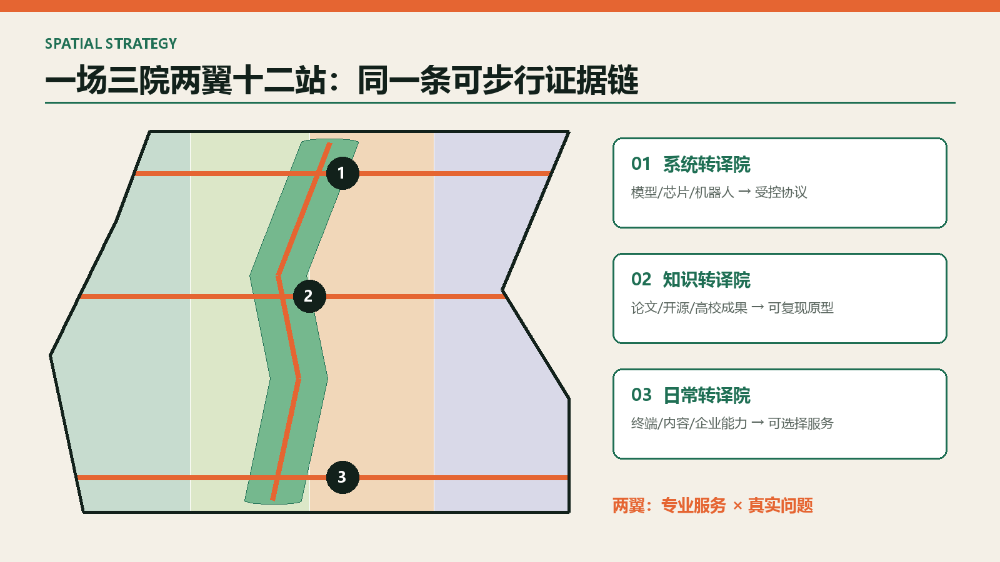
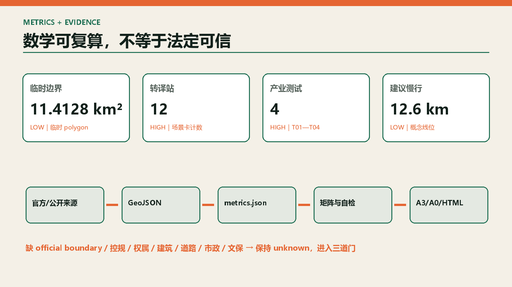

系统转译院
模型、芯片、机器人与标准 → 受控协议。
让技术、城市与人互相读懂：一场、三院、两翼、十二站。

模型、芯片、机器人与标准 → 受控协议。
论文、开源与高校成果 → 可复现原型。
终端、内容与企业能力 → 可选择服务。

总览地图同时解释约 43.6 km² 统筹研究、约 11.4 km² 总体设计和约 368.4 ha 重点区三层范围。遗址公园不是背景，而是高校、企业、社区和访客共享的可步行证据链；用地分区为策略表达，不是法定用地或道路红线。

每一院都设置资料门、专业门、公共门；缺一则不能从概念进入建设。
复现/偏差/能耗
复现失败或高风险偏差即停近失/急停/绕行
两次急停即停测越界/误导/主动反馈
一次危险误导即下线能耗/温度/队列
超容量即降载许可/依赖/复现
许可不清不上墙权属/需求/冲突
冲突未披露即换人路网/匿名计数
误报>15%停模型公开办事知识
无出处立即转人工授权/撤回/条款
不可撤回拒绝接入公共文化资料
错误即撤稿校订照度/主动报告
争议则缩短时段问题/证据/预算
无价值证据不采购研究者、维护者、初创和成长企业需要复现、合规、测试与首单。
一线服务者和居民需要人工兜底、申诉入口与非数字路径。
老人、儿童、残障者和国际访客不能被强制扫码或默认采集。

先补物理连续，再叠加数字服务；测试廊必须可观察、可急停、可退出。

11412825 m²
0.1217
0.0059
| 阶段 | 更新项目 | 门槛 |
|---|---|---|
| 0—1 年 | 统一证据模板、开源桌 | 临时许可、无障碍与文保审查 |
| 0—2 年 | 模型证据场、慢行断点样段 | 测试授权、安全与道路条件复核 |
| 1—3 年 | 三院测试、公共服务交接、低碳插接 | 安全、伦理、能源、运营责任 |
| 2—5 年 | 站城连通、建筑再利用 | 官方边界、控规、权属、交通与工程 |
公告 1.3—1.5 与 agent.1—agent.6 全部进入 compliance_matrix，并链接章节、图层、指标和图纸。
确定性、空间、视觉与专业证据四组校验；临时边界提示不阻断内容评分。
来源见 sources.json；边界、控规、权属、建筑、交通、市政、文保与运营假设见 assumptions.json。
开放数字平台与先虚后实测试。
以日常节时和居民价值评估智慧服务。
按团队成长阶段供给教育、算力与 PoC。
创新集聚与生态保护边界并置。
生产、居住、基础设施与工业遗产混合更新。
设计导则进入正式审查而非停留在口号。